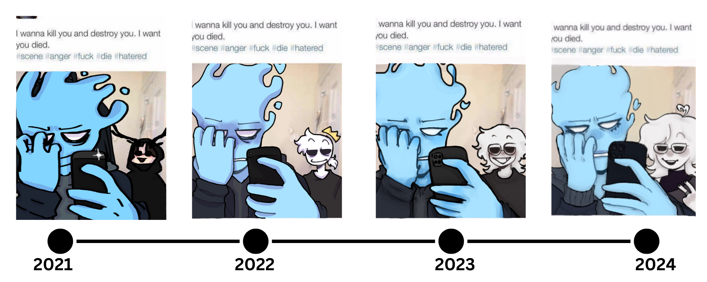
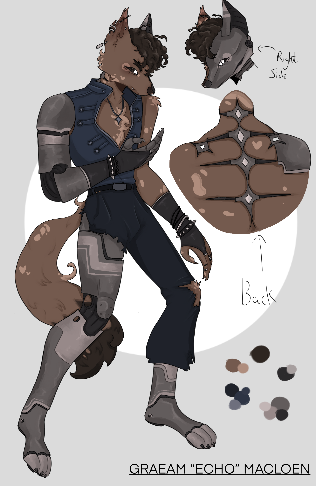

✧࿔*:･Portfolio࿔*:･ ✧
Welcome to Sofia Schneidmueller's Portfolio! Here, you can explore a curated selection of
Sofia's most stunning and diverse works. Each piece reflects Sofia's unique artistic vision and showcases their versatility across various mediums.
showcase!
a small little showcase to show my progress and improve moment over the years!
other works!

The small snake crochet made for one of my friends, unfortunately the cat is not apart of it..

Birthday art for my friend River, who turned 17!!
A furry comission i did for a friend
˚⋆𐙚｡⋆𖦹.✧˚